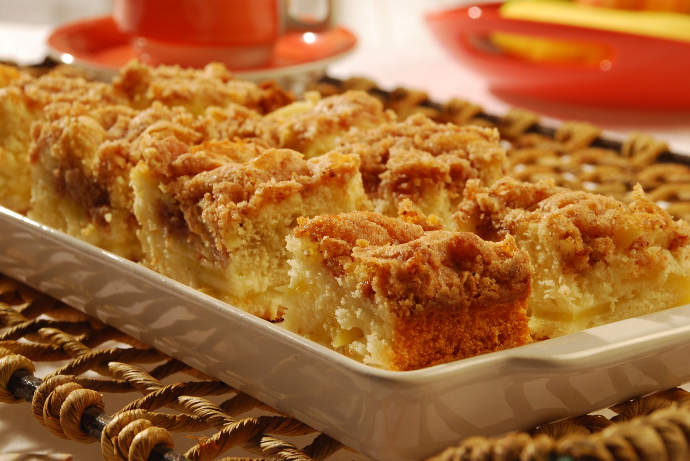

Sobre Alimentação saudável
Uma alimentação saudável é aquela que garante o fornecimento de todos os nutrientes necessários para o funcionamento do nosso corpo. Investir em alimentos pouco processados e reduzir o consumo de gordurras, sal e açúcar são algumas das medidas que podem melhorar a sua alimentação. Muitas pessoas acreditam que os carboidratos e lipídios são vilões quando o assunto é uma alimentação adequada, entretanto os carboidratos são uma importante fonte de energia para o nosso corpo, e os lipídios atuam, entre outras funções, na formação de certos hormônios, na proteção contra choques mecânicos e no transporte de vitaminas. A chave para ter uma alimentação saudável é o equilíbrio. Não podemos excluir nenhum dos nutrientes da nossa alimentação, mas devemos estar atentos à quantidade que estamos ingerindo de cada um deles. Não há como compensar a falta de um nutriente ingerindo outro em grande quantidade.
Receitas
Empanadinhos de frango caseiro
Ingredientes
- 500g de peito de frango moído (peça para moer no açougue)
- 2 colheres de sopa de aveia flocos finos
- 1 ovo
- 1/2 cebola picadinha
- 1 dente de alho picado
- Farinha de milho em flocos para empanar
- Azeite extra-virgem
- Sal, páprica picante e salsinha picada a gosto
Modo de preparo
- Misture todos os ingredientes no frango (exceto azeite e farinha de milho).
- Deixe descansar essa “massa” de frango na geladeira cerca de 15 minutos para ficar mais fácil de modelar
- Modele os empanadinhos e passe na farinha de milho (dá uma quebrada nos flocos da farinha com as mãos mesmo).
- Coloque na air fryer e regue com um fio de azeite por cima e coloque para assar a 180 °C por uns 20 minutos.
Shake power de frutas vermelhas

Ingredientes
- 1 copo de leite vegetal
- 1 banana-nanica congelada
- 1/2 xícara de mirtilos congelados
- 5 morangos congelados
- 1 colher de sopa de pasta de amendoim sem açúcar
Modo de preparo
- Bata todos os ingredientes no liquidificador.
- Em seguida, polvilhe chia por cima e é só se deliciar.
Cuca de maçã
Ingredientes
- 4 maçãs picadas com casca
- 3 ovos
- 1/2 xícara de óleo de coco (pode ser outro óleo também)
- 1 e 1/2 xícara de aveia
- 1/2 xícara de castanhas picadas (usei do Pará e amêndoas)
- 1/2 xícara de uvas-passa (pode usar outra fruta seca também ou não usar se não gostar)
- Canela em pó
- 1 colher de sopa de fermento
- 1 colher (chá) de açúcar mascavo para polvilhar.
Modo de preparo
- O primeiro passo é cortar as maçãs, acrescentar as castanhas picadas, as uvas-passas, os ovos e o óleo.
- Misture bem e adicione a aveia, a canela e por último o fermento (a massa fica pesada mesmo).
- Coloque em forma untada e polvilhe o açúcar mascavo.
- Leve ao forno por uns 20 minutinhos. Espete o garfo para ver se está bom.
Fale conosco
Redes sociais
Endereço
Rua teste exemplo nº 145, Bairro Bootstrap - Fortaleza - Ceara